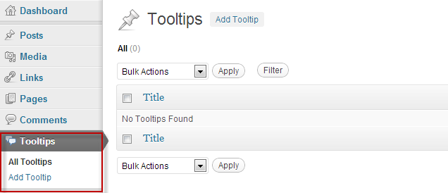

A versatile WordPress plugin for displaying beautiful tooltips. It enables you to display related information on keywords, links, Images, labels,...
You have full control of tooltip content via WYSIWYG editor.
Thank you for purchasing my plugin. If you have any questions that are beyond the scope of this help file, please feel free to contact. Thanks so much!
After installation, You can start adding tooltip to your website at WordPress admin > Tooltips:
Title Text:
Enter the title for tooltip, if you leave it blank the title of HTML editor is used.
Data Source:
By using this option you can specify how tooltip information is gotten. By selecting each item, options of that part is used to generate tooltip content.
Element Type:
This option Let's you select the type of HTML hoverable element.
Print HTML item is special; this item acts like a snippet tool and directly prints HTML(No hover effect).
Theme:
Select the design of tooltip: Currently there are 5 ready themes: White, Black, Blue, Orange and Dark.
Title Image:
If you have selected image element type above, here you should set its image. (32px height)
Link Location:If you have selected Link element type above, you can enter a location to go on click event.
Embed URL:
Enter a youtube, twitter, or instagram URL,... Supports services are listed at http://codex.wordpress.org/Embeds.
Height:
Set the maximum height of embed contents.
Width:
Set the maximum width of embed contents.
Note that some sizes may not be available by some services, you may find out by testing or reading their Embed API.
Min Width:
Enter the minimum width of tooltip (pixels).
Max Width:
Enter the maximum width of tooltip (pixels).
Preferred Position:
You can set a preferred Position for the tooltip.
Popup Horizontal offset:
Horizontal offset for the popup from the center of the trigger when the popup is aligned left or right.
Popup Vertical Offset:
Vertical offset for the popup.
Popup Distance:
Vertical distance when the popup appears and disappears.
Display inline:
Override WordPress behaviour and makes tooltip title to display inline.
Cache Duration:
Enter minutes to cache remote URL results.
Remote URL:
Enter a URL so tooltip loads contents each time page loads.
Enable Expiration:
You can schedule each tooltip to automatically disappear from users view on certain date/time. tooltip is not deleted and you can edit or extend it anytime.
Expire Date/Time:
Select when to disappear tooltip from users view. Tooltip still remains at WordPress admin and you can edit or extend it.
After Expiration title:
Enter some text to display when tooltip is expired. If you don't want to display anything, leave this blank. Although this is not an HTML editor field but you can inset some HTML code in it.
Easing:
jQuery Easing for the animations.
Check demo at http://gsgd.co.uk/sandbox/jquery/easing/
Animation Speed:
How much time the popup needs to reach it's final animation position and opacity in milliseconds.
Animation Speed:
How much time the popup needs to reach it's final animation position and opacity in milliseconds.
Enable CSS Animations:
These effects will only work in modern browsers if the browser doesn't support css animations the jQuery animations will be used as fallback.
Check demo at http://daneden.me/animate/.
Show CSS Animation:
Animation for showing tooltip.
Hide CSS Animation:
Animation for hiding tooltip.
Invert Animation:
The popup will move up when an element is hovered and further up when fading out. If you set this to true, the popup will move down when fading out.
Custom CSS Class:
Enter one or more CSS class to add to title element, seperate multiple classes with space.
Hide On Popup Click:
Hide tooltip when it is clicked.
Hide On Trigger Click:
Hide tooltip when the trigger is clicked.
Hide Trigger:
Hide the trigger when the popup is shown.
Trigger On Click:
Disables the hover event for triggers and tooltip will be activated by clicking the trigger. A second click will trigger the default action on the trigger. I.e. open a link.